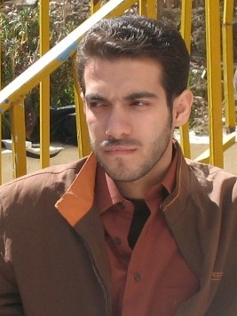

|
|
کاوه قاسمی کرمانشاهی بازداشت شد
چهار شنبه14 بهمن 1388
تغییر برای برابری: کاوه قاسمی کرمانشاهی بازداشت شد.

ماموران امنیتی کرمانشاه صبح امروز ، چهارشنبه 14 بهمن ماه، کاوه قاسمی کرمانشاهی، فعال حقوق بشر و عضو کمپین یک میلیون امضا را در منزل اش بازداشت کردند.
بر اساس خبرهای رسیده صبح امروز هفت نفر از ماموران لباس شخصی، با در اختیار داشتن حکمی که به گفته ی خانواده ی کاوه مشخص نیست از سوی چه نهادی و به چه منظوری صادر شده است، به منزل وی مراجعه کرده و پس از تفتیش کامل منزل و ضبط کامپیوتر، وسایل شخصی و دست نوشته های کاوه، او را بازداشت و به همراه خود به مکان نامعلومی منتقل کردند.
کاوه قاسمی کرمانشاهی، روزنامه نگار، از فعالان پرکار حقوق بشر و سخنگوی سازمان دیده بان حقوق بشر کردستان است. او همچنین از اعضای کمپین یک میلیون امضا در کرمانشاه، عضو انجمن منحل شده ژیار و نیز از اعضای سازمان ادوار تحکیم وحدت است.